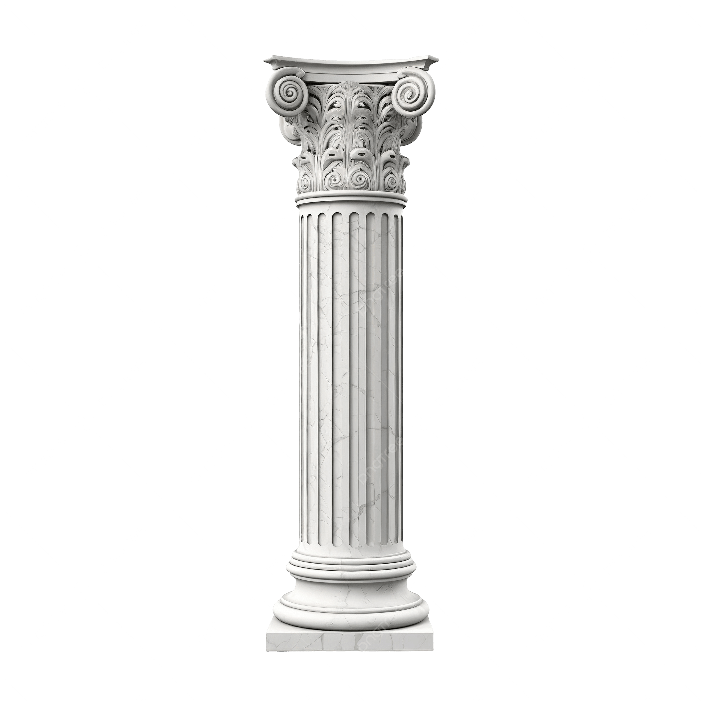

A palavra “política” é derivada do termo grego “politikos”, que designava os cidadãos que viviam na “pólis”. “Pólis”, por sua vez, era usada para se referir à cidade e também, em sentido mais abrangente, à sociedade organizada.
“O homem é, por natureza, um animal político” foi formulada pelo filósofo grego Aristóteles. Quando Aristóteles afirma que o ser humano é um animal político, ele quer dizer que o homem é um ser feito para viver na pólis, em comunidade organizada, diferentemente de outros animais, que vivem em bando apenas por instinto de sobrevivência e proteção mútua.
Para Aristóteles, quem vive fora da pólis por opção é “ou um bruto ou um deus”, pois não necessita da convivência humana para se realizar. Nessa visão, a política não é uma atividade opcional que se escolhe exercer de vez em quando; ela é a condição de existência do ser humano. Nós só nos tornamos plenamente humanos quando nos relacionamos com os outros, debatemos as regras que regem nossa vida coletiva e buscamos a justiça. Um indivíduo isolado não consegue desenvolver suas virtudes morais ou intelectuais em seu potencial máximo, pois precisa do espelho da comunidade, do contraditório e do diálogo.
A necessidade de uma consolidação de regras de convivência e deveres comuns na sociedade deu nascimento ao primeiro conceito de “política”. A política acontece justamente no ato de existir em conjunto e, por isso, existe para além do governo. Dessa forma, a origem da política remonta à participação na comunidade, à vida coletiva.
Com a expansão de Roma, o termo passou por uma reinterpretação prática. Os romanos adaptaram a ideia grega para gerir um império vasto e heterogêneo. A política passou a ser medida pelo Direito (ius) e por estruturas institucionais formais (como o Senado). A noção de res publica (“coisa pública”) fortaleceu o conceito de política como a gestão da ordem legal, dos impostos, das fronteiras e da cidadania jurídica, consolidando a ideia de instituições que sobrevivem aos governantes.
Desde então, o significado do termo política vem se alterando e se reinventando a cada pensamento crítico que é feito. Porém, mesmo com tantas alterações ao longo dos anos, o conceito primordial de “homem social” ainda permanece intacto na palavra política; sendo assim, todos os novos significados e idealizações se baseiam no “homem e sociedade”.
Mediar interesses diferentes e opostos entre grupos da sociedade, substituindo a violência pela negociação e pela norma coletiva.

Envolve a definição de rumos, leis e regras que organizam a vida em sociedade.
É a capacidade de liderar, coordenar ou governar por meio de argumentação, leis e instituições legítimas, separando o poder público do privado e subordinando a força à autoridade civil.
Com o passar do tempo, as sociedades se modificaram e criaram novos conceitos e fundamentos modernos para a realização de política. Dessa forma, a palavra adquiriu novos significados e objetivos conforme era idealizada por pensadores e líderes.
A evolução do pensamento e da prática política da humanidade reflete uma busca constante por respostas a uma pergunta fundamental: como organizar a sociedade e governar o poder?
A história transita de sistemas teocráticos e centralizados da Antiguidade para o surgimento do cidadão e das leis escritas na Grécia e em Roma. Na Era Moderna, o embate entre a autoridade absoluta dos reis e a busca por liberdade individual deu origem à divisão entre Esquerda e Direita — surgida na Assembleia Nacional da Revolução Francesa, em 1789.
Nos séculos XX e XXI, essa dinâmica diversificou-se ainda mais: ideologias extremas desafiaram a própria existência da democracia, enquanto modelos soviéticos e novas fronteiras tecnológicas redefiniram o que significa governar na era da informação.
Política é o motor que move a sociedade; portanto, é necessário que manutenções sejam feitas periodicamente para que esse motor continue funcionando sem causar problemas.
Aqui você pode conhecer um pouco sobre o tema.
Linha do TempoRecomendo que, caso surja maior interesse, você busque conhecimento em lugares variados, pois assim poderá garantir uma visão mais ampla e imparcial sobre o assunto.